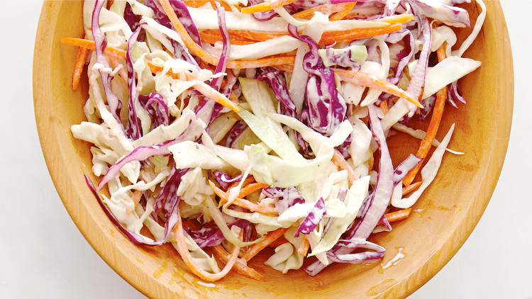

Coleslaw Recipe

Description
This crunchy slaw bursts with flavor, perked up by the delicious pairing of red grapes and a tangy, blue cheese speckled dressing.
Ingredients
- 1 (16 ounce) package shredded coleslaw mix
- 2 cups seedless red grapes, halved
- 1/2 cup shredded carrot
- 1 cup mayonnaise
- 1/4 cup prepared Dijon-styled mustard
- 1/3 cup crumbled blue cheese
- 2 tablespoons white sugar
- 2 tablespoons cider vinegar
Steps
- In a large bowl, whisk together the mayonnaise, mustard, cheese, sugar, and vinegar. Add the coleslaw mix, grapes and carrots and stir until evenly coated. Chill until serving.